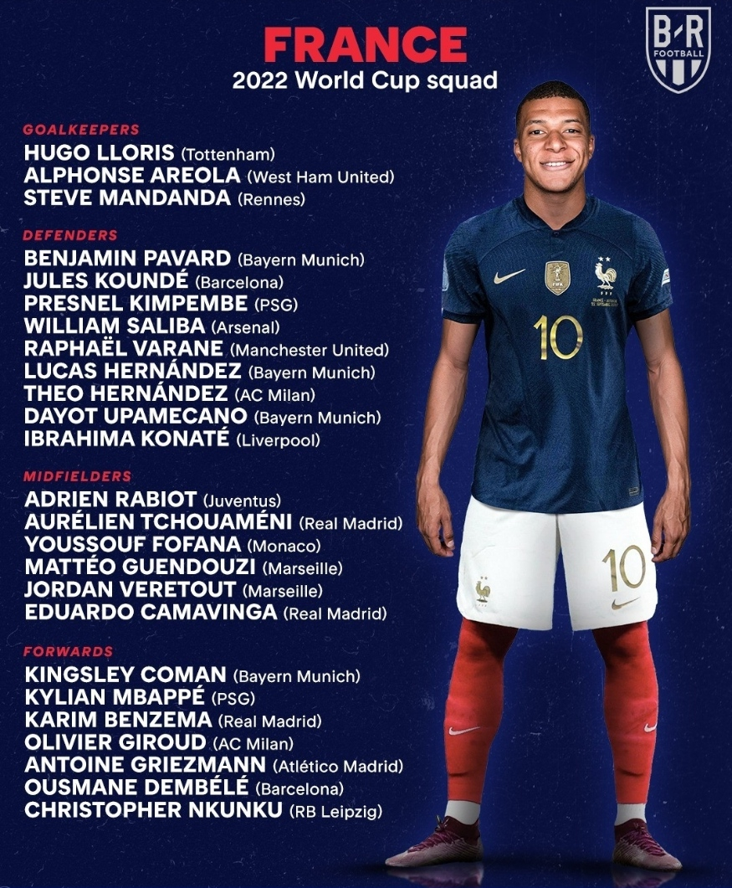
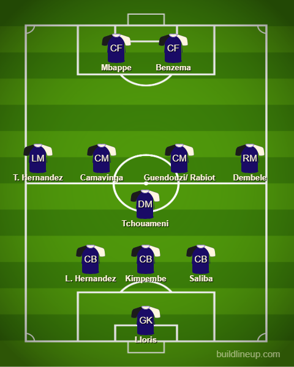
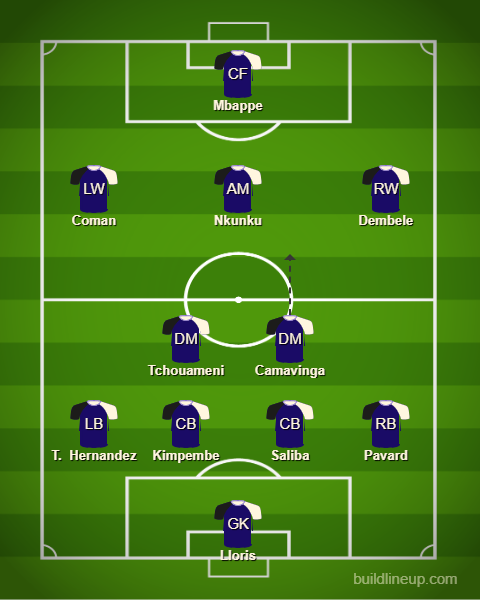

Squad Reaction - France

Alright, defending champs. Strong squad. The only thing I am probably worried about is the lack of fullbacks with only Pavard and Theo Hernandez. No Ferland Mendy which is surprising. Maybe it could mean Deschamps is trying to push the 3 at the back system I think. Glad to see Varane in the squad still despite him missing the first game as a United fan. The midfield will be without Pogba and Kante who are very influential in general but in their stead, I am hoping Camavinga and Tchouameni will step up. They have been developing really well at Real Madrid so let u see how they do. The forward line will be Mbappe obviously. Along with him, I think Benzema would be great to have as Mbappe has said he would work well in a 2 ST formation. So keeping that in mind, if Deschamps wanted the 3 back formation, it would probably look like this:

If we looked at a different type of formation then this could be worth a shout:
